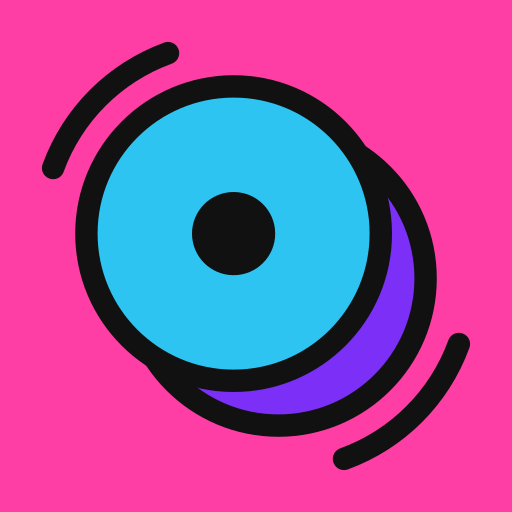
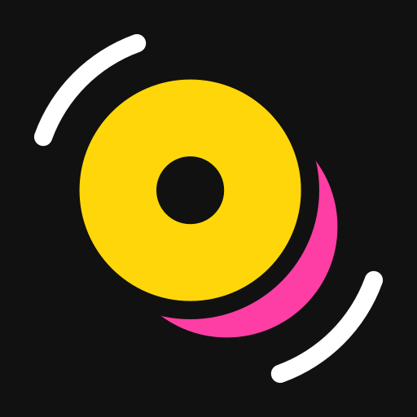
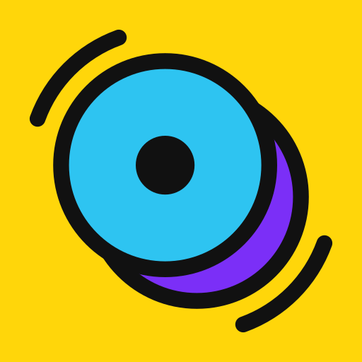
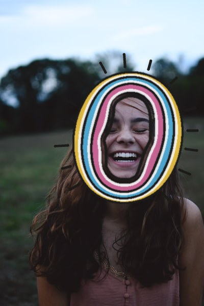
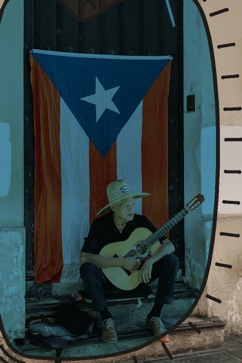
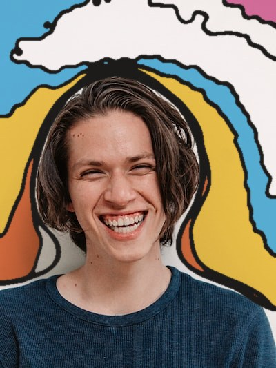
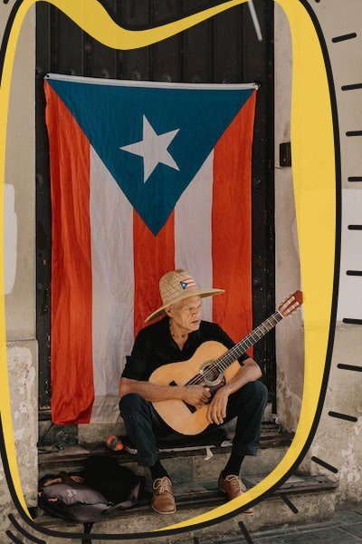
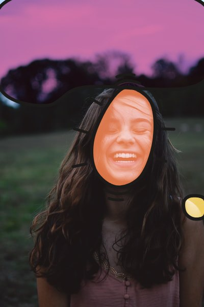
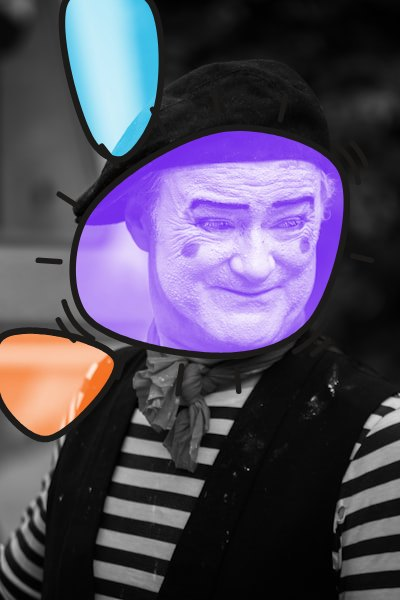

Noir & une couleur
Douze photos ramenées à deux encres, recouvertes d'une forme tirée au sort en fusion multiply. Rien n'est cadré à la main : tout vient d'une graine.
Voir la planche →Un repo pour tester des idées de design. Chaque dossier est une piste : un script qui fabrique, une planche qui montre ce que ça donne.
Douze photos ramenées à deux encres, recouvertes d'une forme tirée au sort en fusion multiply. Rien n'est cadré à la main : tout vient d'une graine.
Voir la planche →


Le même traitement rejoué par le navigateur : un filtre SVG pour la bichromie,
un clip-path en multiply pour l'aplat. Aucun pixel calculé à l'avance,
pas une ligne de JavaScript.


Huit couleurs flash cernées de noir, un O en tranche de gigot, et un bouton qui se coche en ouvrant un œil. Logo et pictogramme en SVG, bouton en JS et en React, et des aplats posés sur photo, en Python ou dans le navigateur.
Voir la planche →


Trois scripts sans IA qui trouvent le sujet de n'importe quelle photo et posent par-dessus des aplats francs, de gros contours noirs et des traits de vibration. La photo n'est jamais retouchée.
Voir la planche →


Les aplats de figures.py calculés par le navigateur, sans IA ni
bibliothèque. Les formes sont montées sur ressorts : elles évitent le curseur,
et un clic les envoie vers une autre zone de la photo.


